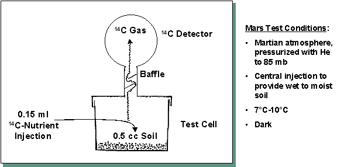
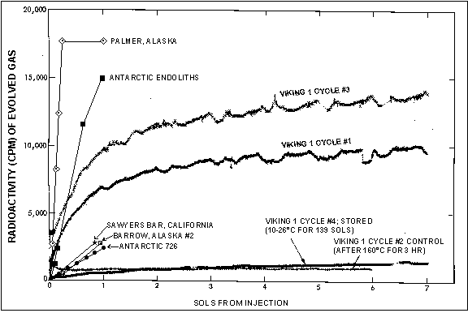
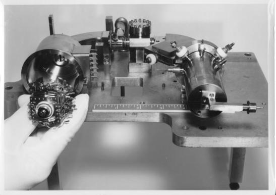
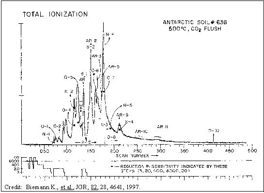
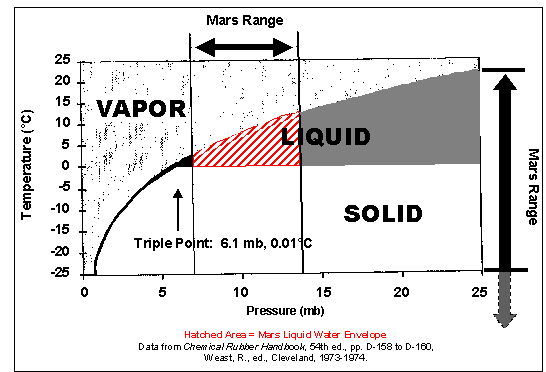
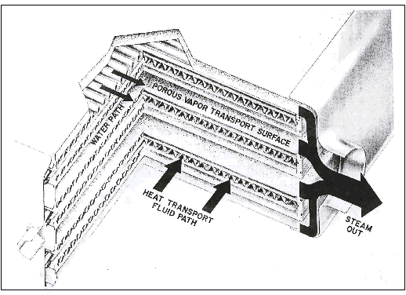
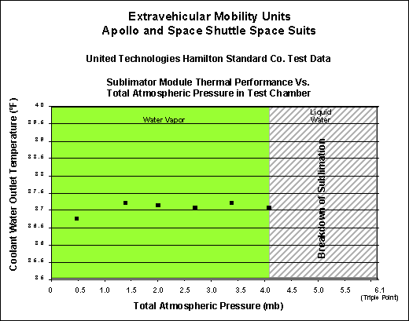
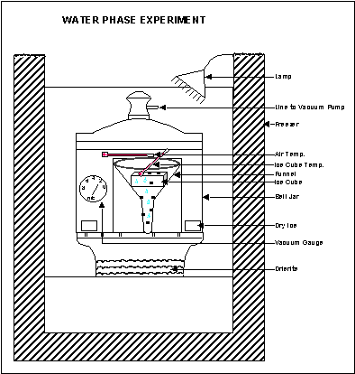

APPROACHES TO RESOLVING THE
QUESTION OF LIFE ON MARS
Gilbert Levin[1]*,
Lawrence Kuznetz[2], and Arthur Lafleur[3]
ABSTRACT
After 21 years of study, a case was made(1) that the 1976 Viking Labeled Release (LR) experiment detected microbial life in the Martian soil. However, two key factors prevent general acceptance of that conclusion. They are the failure of the Viking Gas Chromatograph Mass Spectrometer (GCMS) to find organic matter in the Martian soil; and the presumed inability of the Martian environment to support liquid water. Further examination of these often cited factors shows they do not prohibit a biological interpretation of the Mars LR results.
Newly revealed information on tests made with the Viking GCMS Engineering Breadboard instrument (EBB/GCMS) attests to its inability to detect organic matter in some terrestrial soils. New work also shows that organic matter from moderate populations of microorganisms in soil would have been undetectable. These qualifications of the Viking GCMS weaken its historical impact against a biological interpretation of the LR Mars data.
The no-liquid-water argument is also shown to be flawed. Empirical data demonstrate that water does exist in liquid phase under ambient atmospheric pressures and temperatures existing on the surface of Mars. NASA’s June 22 press conference announcement that the Mars Global Surveyor found extensive evidence of current liquid water on Mars adds ground truth validation. The July 10, 2000, report of indigenous microorganisms fully metabolizing in sub-freezing South Pole snow where little, if any, water is available, demonstrates the possibility for life on Mars. A leap of faith is no longer required concerning the possibility of indigenous microorganisms on Mars.
The present hiatus from Martian exploration provides an excellent opportunity to mine and analyze data relevant to life on Mars, and to conduct meaningful experiments. An available flight type Viking GCMS can be tested to determine its sensitivity to organic matter, including microorganisms, and provide guidance in designing future Martian organic detection instruments. Experiments could determine whether terrestrial microorganisms could survive or grow under Martian conditions as they are now known. This could be done in combination with experiments further determining the limiting conditions of liquid water on Mars.
A simple metabolic chirality experiment, based on the LR legacy, is advocated for the next Mars lander. The experiment could determine unequivocally whether living microbes exist in the soil of Mars.
Suggestions for further research and development of life detection and analysis experiments are made.
Keywords: Water on Mars, Organics on Mars, Life on Mars, Viking LR, Viking GCMS, Chiral LR
1. Background
Twenty-one years after The Viking Mission’s search for life on Mars, one of us first claimed(1) that the LR experiment (Figure 1) had detected living microorganisms in the Martian soil. The Viking 1 LR Martian results are presented along with several terrestrial LR tests for comparison (Figure 2). Objections to the LR data’s being ascribed to biological origin were reviewed and refuted, updating an earlier such review(2). However, general acceptance of the biological interpretation continued to be withheld on two bases: the failure of the Viking organic analysis instrument (“GCMS” for gas chromatograph mass-spectrometer) to find any organic compounds(3); and the presumed absence of liquid water on the surface of the planet.
|  FIGURE 1. Schematic of the Viking Labeled Release Experiment |
|  FIGURE 2. Mars and Terrestrial LR Soil Test Results: Terrestrial soils were tested for 25 hours (about one sol) only, and discrete, rather than continuous, measurements of evolution of 14C gas were made. Terrestrial soils radioactivity measurements normalized to Viking LR detection sensitivity. All terrestrial soil controls (after 160ºC for 3 hours) essentially at or near background. All Viking results include background ranging from 500-1000 cpm. |
Chemical explanations of the LR data continued to hold favor despite the fact that, over the years since Viking, none of the numerous attempts to demonstrate a chemical cause of the LR results had succeeded(4) and that an ultra-sensitive search(5) for hydrogen peroxide, widely accredited as destroying organic matter on Mars, failed to find any indication of it.
2. The REMAINING Issues
2.1 Is
there organic matter on the surface of Mars?
Life as we know it, and as Viking sought it, is based on organic matter. The Viking GCMS’ failure to find organic matter where the LR obtained a positive response posed a dilemma. No organic compounds attributable to the Martian soil were detected(3). It was thought that only one experiment could be correct. The conservative consensus was reached: “No organic matter, no life.” In an attempt to de-couple the two experiments, problems concerning the sensitivity and mechanical reliability, including that of sample acquisition, of the Viking GCMS were presented(1). To reconcile the Viking GCMS’ results with the finding of organics in the Martian meteorites(6), NASA stated(7) that the Viking GCMS was of limited sensitivity and might not have been able to detect organics at the level present in the meteorites. However, the general consensus remained that the GCMS data forbade a biological interpretation of the LR experiment.
It is remarkable that, despite the all-important significance attributed to the Mars GCMS data, and the questions raised about the experiment, until recently no efforts to examine the performance of the Viking instrument or to reassess its findings have been made since the first report(3). Information confirming and extending doubts about the Viking GCMS are herein presented for the first time by the engineer (A.L.) assigned to help the instrument meet its Viking installation deadline, and who was a co-author of the paper reporting the Viking GCMS Martian results(3).
Because of the crucial need to keep the GCMS flight instrument as free of contamination as possible, no experiments or calibrations were performed on this unit prior to launch. A limited number of tests of the Viking Engineering Breadboard GCMS (EBB/GCMS) was made. The tests were not designed to determine the detectability of living organisms, but to analyze organic matter, primarily in low organic content soils. Along with the determination of organic content by wet chemical analytical techniques, microbial counts were part of the characterization made of these soils to aid interpreting the GCMS test results on those soils. Despite the importance assigned to the Viking GCMS data with respect to the Mars life question, post-flight research programs were truncated by funding limits. It has generally been concluded that the GCMS negative result rules out carbon-based life forms on Mars. We show, however, that the GCMS results are indeterminate in this respect and that the instrument, while remarkably sensitive, was unequal to its assigned task. Millions of microorganisms are required to provide sufficient organic matter to evoke a positive response in the GCMS whereas the LR has consistently detected as few as 10 cells.
2.1.1
The Viking GCMS detection of organic compounds
The Mars Viking GCMS results were published 23 years ago(3). That paper discussed in some detail the instruments’ sensitivity for a range of organic molecules. The organic compounds that planetary scientists were looking for on Mars were not only, or primarily, from living organisms. Most scientists believed that the Viking Lander would encounter a planet equivalent to a prebiotic Earth. There are many sources of organics in the universe besides living organisms. Meteoric impact, interplanetary dust and photochemical synthesis of atmospheric gases were thought to have endowed Mars with abundant organic matter. Indeed, it is plausible that carbon-based astrochemistry is a major source of organic material in the universe(8). Thus, the assigned mission of the Viking GCMS was one of analysis, not detection, of the organics presumed there.
Overall, the sensitivity of the Viking GCMS instrument (Figure 3) for many organic compounds was outstanding. It was especially well suited for the detection of non-polar semi-volatile aromatics such as naphthalene. Part of the reason for this high sensitivity was the use of a novel hydrogen separator (Figure 4) to remove hydrogen carrier gas from thermally evolved organics without removing the organic compounds themselves prior to their entry into the ion source.
Although the use of the separator generally provided excellent sensitivity, the reactivity of its palladium surface was a potential disadvantage to the integrity and survival of some vaporized species for detection. Thus, the construction and performance of the Viking GCMS need to be considered before interpreting its performance for any given organic compound.

| FIGURE
3. Viking Engineering Breadboard mass spectrometer
showing (CW left to right) ion source (in gloved hand),
followed by the electric sector, magnetic sector/ion pump
and electron multiplier detector. The spectrometer
magnet, which was removed for this picture, also served
as the magnetic field for the ion pump. The MS was
scanned by varying the accelerator voltage. Though not
ideal for optimum performance, this arrangement reduced
electric energy consumption. |
| FIGURE
4. Viking GCMS hydrogen separator. The separator
consisted basically of a hydrogen-permeable
palladium-alloy tube. Hydrogen was removed by
electrochemical means. |
2.1.2
Viking GCMS detectability v. sensitivity
The Viking GCMS instrument posted detection limits ranging from tens of parts per billion (ppb) for aliphatics, down to nearly a part per trillion (ppt) for naphthalene.(3) Although these values are still outstanding even by today’s standards, it is likely that soil samples taken from a range of locations on Earth would give negative results for organics when analyzed in a Viking GCMS for the reasons which follow.
The Viking GCMS was unlike most other GCMS units built previous to or since the Viking Mars program(9). The most obvious differences were in the design of the inlet system. Possibly, the most crucial factor governing the design was the need for unusually low power consumption mandated by space flight constraints. When a mass spectrometer overloads with sample, the vacuum (<10-5 torr) necessary for proper operation rises to unacceptable levels, causing failure. On Earth, pressure surges are avoidable or reversible by using large diffusion or turbomolecular vacuum pumps. On Mars, overpressurization would have caused a catastrophic failure, because the ion pump used to maintain vacuum conditions was minimally sized. Further, it was not very robust, and repairs to it were obviously impossible. Moreover, once it was overpressurized, it could not be restarted.
Therefore, a “smart” protection system was designed into the GCMS inlet. Electronically actuated valves were inserted into the sample path to restrict the flow from the ovens to the MS when needed. As a final precaution, the MS inlet could be shut completely. The inlet system, called the “effluent-divider network,” worked well on Earth and on Mars(9). It was intended primarily to vent excess 13CO2 present in the ovens during pyrolysis and to divert any water vapor released from soil samples. All plumbing and fittings in the effluent divider network and elsewhere in the inlet system were composed primarily of stainless steel. The heated stainless steel plumbing can affect sample integrity by trapping or thermally converting reactive organic compounds because of the relatively large heated surface where reactive compounds could be adsorbed or transformed. Also, the palladium alloy sample path through the hydrogen separator (discussed earlier) can trap or impede certain classes of organics(9).
The sensitivity of the GCMS is only one factor involved in the detection process. The ability to be detected (detectability) varies from compound to compound depending on several factors, including:
l its vaporization under pyrolysis
l its ability to be transmitted through the whole instrument train without loss,
l its GCMS detection limit,
l whether co-eluting compounds mask its presence, and
l whether the evolution of abundant species, such as water or CO2, causes a shutdown of the inlet valve or triggers the effluent divider when a specific compound elutes.
2.1.2.1 The effluent divider
While reducing sensitivity in some instances, the effluent divider is a very important and unique feature of the Viking GCMS. The effect of the effluent divider is shown in the small graph below the Antarctic Soil 638 chromatogram (Figure 5). The values of ¥, 8000, 400, 20, and 3 plotted on the ordinate are the divider ratios. The infinity symbol (¥) indicates that the valve to the MS ion source was completely shut. The abscissa values are scan numbers, indicating a complete mass spectrum scan. During most of the first 50 scans or so, the divider ratio is generally greater than 400:1. This means that only 1/400 of the effluent from the pyrolyzer is introduced into the mass spectrometer. For approximately half of these scans, the valve to the instrument was closed and the entire sample was diverted to vent. This occurred for most samples because of the presence of water. Any volatile organics eluting from the GC during this time would not, of course, be detected by the instrument. Components eluting when the effluent divider was in a partially venting mode would have their detectability reduced by the divider ratio.
The divider action near scan 135 illustrates some additional complexity in data interpretation. In the vicinity of scan 135, a component (benzene) eluting from the GC was in such high abundance that it triggered the effluent divider operation. This, in turn, caused the peak produced by benzene (residual from cleaning the instrument) to be reduced in area and distorted. Thus, any Marian components co-eluting with benzene would have part of their effluent diverted, possibly enough to become undetectable by the GCMS.
|  FIGURE 5. Viking EBB/GCMS results for Antarctic soil 638. This soil contained large amounts of organic matter. N=nitrogen compounds, AR=aromatics, O=oxygenates, S=sulfur-containing, HC=hydrocarbons. |
2.1.3
The Viking GCMS engineering breadboard instrument
While the Viking GCMS was designed to identify the organic compounds thought to be present in the surface material of Mars(3), the mass spectrometer unit was also coupled to an atmospheric inlet system and was used to investigate the composition of the Martian atmosphere(10-12). The design of the GCMS was severely constrained in weight, power consumption, and in many other areas, as could be expected for an instrument that needed to endure the stresses of a rocket launch and the space environment(9). As might be expected, these constraints limited its performance. The instrument was developed and tested by means of an engineering breadboard (EBB/GCMS). The EBB/GCMS (Figure 3) was of essentially the same construction and size as the flight instrument.
2.1.4
EBB/GCMS results with terrestrial soils
As stated, the principal mission of the Viking GCMS was the analysis of organic compounds. It was not designed to detect living organisms. Although living organisms are made up of organic compounds, only a few experiments were performed then, or since, to shed light on the suite of organics that would follow the pyrolysis of microorganisms, and what their detectabilities might be. Experiments with laboratory GCMS instruments have been reported in which bacteria have been pyrolyzed and the effluent characterized by mass spectrometry; however, those instruments were very different, and few of the experimental conditions matched or even approximated those of the Viking GCMS. Until a sufficient number of appropriate experiments is conducted, it will be impossible to draw conclusions about the impact of the Viking GCMS data on the presence or absence of life on Mars.
A modest set of experiments was performed with the EBB/GCMS to determine the ability of the Viking GCMS to detect organic matter in soils. A well-studied set of Antarctic soils was used for these tests. They were thought to represent one of a number of possible soil models that might be expected on Mars(13). Each soil sample was also analyzed for other parameters, including microbial populations. The EBB/GCMS results for one of the Antarctic soil samples, designated as No. 638, are shown (Figure 5). Some results for this sample have been described previously(3,14). It was a surface sample collected during the austral summer of 1967-68 near the junction of King David and Conrow valleys(13). The sample site was near small ponds and algal crusts. The sample was thought to provide a good test of the sensitivity of the Viking GCMS and its ability to cope with similar extreme environment soils that might be encountered on Mars. This soil sample was analyzed by classical microbial techniques and found to contain 104 bacteria/gram and up to 200 algae/gram.
More than thirty clearly identifiable components in soil 638 were found by the EBB/GCMS, ranging upwards in concentration to 100 ppm of the sample. However, simple calculations showed that the preponderance of the organic material must have been organic debris or artifacts not associated with the bacteria or algae. At most, the pyrolysis effluent from the organisms alone could not have amounted to more than 100 ppt of the soil mass. This amount of material in a multi-component mixture would not have been detectable by the instrument(14).
In addition to Soil 638, detailed EBB-GCMS data were obtained for Antarctic Soils 542, 634, 664, and 726. A number of soil samples containing microorganisms was analyzed by the EBB/GCMS and none produced detectable organics clearly attributable to the soils. These include Antarctic Soil 726 for which data were previously reported(15) showing that the soil contained living organisms, and two Colorado desert samples which also contained living microorganisms but failed to register. The EBB/GCMS entailed a problem that increased with use. Remnants of previous samples remained in the instrument despite cleaning efforts and clouded the results on successive samples.
A recent research effort(16) has looked directly at the problem of detection of microorganisms by GCMS. The workers sterilized a Mars analog soil and then inoculated portions of it with measured quantities of live E. coli. Sealed under Martian ambient pressure, the sample was then pyrolyzed at Viking GCMS conditions: 500oC for 30 seconds. Analysis of the resultant vapors showed that 3x109 organisms per gram of soil would have been undetectable by the Viking GCMS (they state that this figure does not allow for loss of any pyrolysis products by venting through the effluent divider, as occurred on Mars). Applied to Soil No. 638, containing 104 cells per gram, this means that 105 times as much bacterial mass from dead cells would have had to have been accumulated and preserved to provide a detectable quantity of organic matter. Another recent paper(17) calculates the maximum biota density that could be supported by the energy flux available to the Martian regolith to be an amount that equates to about 107 cells per gram. Again below the reach of the Viking GCMS, this adds orders of magnitude to the accumulation required for detection. Both papers make it clear that future analytical instruments searching Mars for organic compounds, whether or not associated with life, will require sensitivities orders of magnitude greater than those of the Viking GCMS.
Yet another recent paper(18) addresses the Viking GCMS. Conveyed to the Proceedings of the National Academy of Science by a member(19) of the Viking GCMS Team, and co-author of its original report(3), the article reasserts the widely held belief that organic molecules would have been deposited on Mars by meteoric bombardment. Its authors state that all such organic compounds, or traces of compounds created by life (or otherwise), would not have been destroyed by the putative oxidant; some would have been converted to stable organic compounds that should accumulate in the Mars surface material. (This is consistent with the Viking Pyrolytic Release Experiment that showed the photo-chemical creation and accumulation of organic matter in the Martian soil sample exposed to simulated Martian sunlight and atmosphere(1).) The paper contends that the Viking GCMS did not heat the Martian soil sample sufficiently to vaporize these organic compounds for detection. One of the authors comments(20), “If they had heated it (the soil sample) for 10 to 20 minutes (as opposed to the 500oC for 30 seconds provided by the Viking GCMS), they would have seen what we are predicting here (organic matter).” We point out, however, that this scenario relies on the presence of an oxidant for which, as stated earlier, careful searches have found no evidence.
2.2 Is there liquid water on the surface of Mars?
The low concentration of atmospheric water vapor, the small total atmospheric pressure, and sub-freezing temperatures are commonly cited as “proof” that liquid water cannot exist on the surface of Mars. However, theoretical and empirical evidence(21) dictate the opposite conclusion. The regions in which water should exist in liquid form on Mars are those in which the temperature and pressure parameters lie within the envelope approximately defined by 0o C to 12o C and 7 mb to 14 mb of the water phase diagram (Figure 6). The Pathfinder data(22) showed that the surface temperature of Mars at the landing site rose well above freezing when the sun ascended. A model providing about one percent moisture to the soil (approximately the same amount of moisture that supports microorganisms in the sand dunes of Death Valley, California) diurnally was created(21) based on Viking and Pathfinder data on atmospheric water vapor content, atmospheric pressure and surface temperature.
 |
The model predicted that Martian water vapor would be concentrated near the planet’s surface. A recent paper(23) uses Images for Mars Pathfinder data to support this phenomenon upon which the model was predicated. And, even more recently, images from the Mars Global Surveyor have been interpreted(24) as strong evidence for current liquid water activity on the surface of Mars at numerous, widespread locations in latitudinal bands in both Northern and Southern hemispheres. Such sporadic incidents as reported could provide liquid water adding to that available from the atmosphere (to which it undoubtedly contributes) as proposed herein. The new findings confirm the understanding of the physics controlling the phase of water as presented in this paper.
An instance(21) when the Viking 2 Lander footpad temperature stalled at 0oC under the rising sun suggested that frozen water in the soil beneath the footpad was absorbing the latent heat of fusion preparatory to melting into liquid phase. Pathfinder measured the temperature of the near-surface atmosphere and found it to increase exponentially toward the ground(22). This effect likely raises surface temperatures above freezing diurnally over wide geographic areas. Viking images showing the continual presence over many days and months of visible ice cover support the moisture-producing model. So do data showing that the atmosphere near the ground surface is diurnally saturated with water vapor. When the Martian surface air over areas of ice is saturated in water vapor, and the temperature of the ice rises to 0ºC, ice must liquefy to be in equilibrium with the water vapor evolved immediately above it. It seems likely that the Pathfinder-observed phenomenon of exponentially increasing atmospheric temperature with proximity to the surface also obtains in areas of Mars where surface ice has been observed. If so, frozen water on, or in, the soil must enter the liquid phase when the temperature rises to 0ºC. As long as the total atmospheric pressure exceeds 6.1 mb, the thin layer of water vapor above the ice will reach its triple point pressure. Sublimation of the ice cannot occur because of the overpressure; nor can boiling until the water temperature exceeds about 12ºC. Thus, surface ice and water frozen in soil could liquefy diurnally over wide regions.
2.2.1
The triple point of water
The triple point in the phase diagram of water (Figure 6) occurs at a temperature of 0.01° C and a pressure of 6.1 mb. It is the point where solid, liquid and vapor meet, and from which the boundaries separating these phases emanate. However, there has been much confusion (e.g.,(25)) over the question of whether it is total atmospheric pressure or the partial water vapor pressure that must be exceeded for water to exist in liquid phase.
The 6.1 mb triple point pressure for water was determined experimentally in a single component system, that is, one containing water only. Thus, the 6.1 mb pressure is that of water vapor, the only gas present and is not influenced by any other factors. The average water vapor pressure on Mars is only 0.02 mb. In the real world of Mars, however, the other gases in the atmosphere, primarily CO2, and substances in the soil, provide a multi-component environment.
The physical and chemical characteristics of the Martian surface material are not defined sufficiently to permit a calculation or simulation of their effects. However, the known fineness of the material would make for significant capillary retention of liquid water, raising its boiling point and lowering its vapor pressure. Also the Viking soil analysis indicates the presence of many solutes. Viking images of apparent caliches indicate areas of high salinity. The solutes would serve to reduce the rate of evaporation and raise the boiling point of liquid water. These effects reduce the triple point pressure of water in the multi-component Martian system.
Nonetheless, strong voices continued to argue against any possibility of liquid water existing on the surface of Mars. In denying its presence, and reacting to the model for liquid water, C. McKay stated(4), “Modeling such transient phenomenon is not a productive approach to determine whether liquid water might exist on the surface of Mars. . . experimental simulations are the best way to proceed.” Both earlier(26) and later(27), McKay again emphasized his point that there could be no life on the surface of Mars because no liquid water could exist there. Questioned on this conclusion by G. Levin, he responded “It’s dead, Jim-Gil!”
More recently, however, C. McKay co-authored a paper(28) reversing the death-dry concept of the Martian surface. The new paper maps substantial geographic regions where “liquid water could be stable on present day Mars.” Contour lines show the numbers of days, ranging up to 40, that water could remain liquid on the surface. It would be constructive to expand the regions to include where water might appear in liquid form diurnally or for other short, but potentially biologically meaningful, periods. Also, further expansion of the liquid zones should be indicated based on the effects of solutes and soil capillarity.
Another recent paper(29) reports on the properties of the ice-liquid water interface. According to this new insight, a film of liquid water coats ice surfaces because the ice crystals lose their rigidity as they extend into open air. In cases where frost or ice regions on Mars may not warm up to 0oC, a surface film of liquid water could still be available.
2.2.2
Empirical evidence for liquid water on Mars
One of us (L.K.) followed the
recommendation(4) for experimental simulation of
Martian conditions to study the liquid water issue. Some
highly relevant archived data were resurrected. Then, the
suggested laboratory test was performed.
2.2.2.1
Space suit sublimator experiments
Spacesuit performance data(30) from United Technologies Hamilton Standard, the prime contractor for the astronaut Extravehicular Mobility Unit (EMU) has been examined by one of us (L.K.) for possible relevance to the Mars liquid water issue. The porous plate sublimator used in these suits makes use of the fact that water going directly from ice to vapor in the hard vacuum of space can sustain life support by removing excess body and equipment heat (Figure 7). As a consequence of this design, however, ambient pressures rising above the triple point will cause the ice layer on the plate to melt and experience “breakthrough,” when the latent heat of sublimation is no longer available for cooling. Such functional degradation is rapid and has been observed in suit testing within vacuum chambers at total atmospheric pressures above 4 mb with Mars-like temperatures (Figure 8). The implication is inescapable. If sublimation can be supplanted by melting and evaporation at Martian pressures in a vacuum chamber on Earth, melting and evaporation should occur on Mars as well.
The contractor providing these data commented: “Our EMU sublimator will start to breakthrough (liquid water would appear) at a pressure above 3.0 mmHg (4.0 mb). The sublimator would not work on Mars.”(30) Since the total atmospheric pressure was only 4.1 mb at breakthrough, the water vapor pressure could never have attained the 6.1 mb triple point pressure measured when the only component is water. This demonstrates that the liquid phase of water above the freezing point in a multi-component system is influenced by the total atmospheric pressure and solutes in the water. The combined effect is to lower the triple point pressure for water, and to constrain explosive boiling.
These data support the interpretation(21) of the Viking 2 footpad temperature as having determined the presence of liquid water by remaining at 273o K for an interval despite being under the ascending sun.
|  FIGURE 7. Schematic of EMU Porous Plate Cooling System, United Technologies Hamilton Standard |

| FIGURE
8. Disruption of Performance with Appearance of
Liquid Water as Atmospheric Pressure Rises |
2.2.2.2
Bell jar experiments
The Mars liquid water issue was investigated directly(31,32) in gaining additional empirical evidence. A series of bell jar experiments was run to determine whether or not liquid water could exist under Martian conditions with its low partial pressure of water vapor. An ice cube in a glass funnel was placed inside a bell jar, which contained a desiccant (Drierite), calibrated thermometers, and dry ice (to create a CO2 simulated Martian atmosphere). Martian pressures were maintained by a vacuum pump. A lamp placed over the bell jar simulated Martian sunlight (38% of Earth). Time, temperature and pressure readings were recorded and the end point for each run was defined as the first appearance of a water droplet or film. The test setup is shown (Figure 9).

FIGURE 9. Setup of Experiment
Over 80 test runs were made, 23 using tap water and the remainder using distilled water, diluted sea water, bacterial culture media and other mixtures. Typical results demonstrated that, even with the Drierite removing water vapor from the total atmosphere within the bell jar, the water vapor arising immediately adjacent to its ice source saturated the atmosphere and reached the required triple point pressure to sustain a liquid phase. When the temperature reached 0ºC and the total atmospheric pressure ranged between 3 mb and 10 mb, that is, within the temperature and pressure ambient on Mars, liquid water appeared.
A new report(33) provides pertinent field data on the ability of microorganisms to function without apparent liquid water. Bacteria were found metabolically active and synthesizing DNA in South Pole snow. The ambient local temperatures were sub-freezing. Other than for the mechanism described herein, it is difficult to account for the liquid water necessary. This is recognized by inclusion of a statement from the National Academy of Science saying that the finding could have an impact on the search for life on Mars.
3. Recommended studies and experiments
Despite the foregoing arguments, reservations with respect to the Viking LR data having detected life on Mars will remain. Except for those who cite intuitive feeling against accepting that possibility, more can be done to resolve this major scientific quandary in the minds of the dubious. This is especially important and relevant during the several years’ hiatus in the exploration of Mars during which NASA reconfigures its planetary program.
3.1 Studies
of extant data
Significant data relevant to life on Mars can yet be mined from the Viking, Pathfinder, and possibly other missions to Mars. Data on the experiments conducted by all orbital and lander missions to Mars could be published on a web site. Individual and coordinated efforts could study this large mass of data for relevance to the life issue.
As an example, a cursory review(34) of a portion of the Viking LR radioactivity and temperature data has raised the question of whether a circadian rhythm can be discerned (note undulations in Mars data, Figure 2). This would be a clear sign of biology. Efforts are being made to find the complete data set to permit computer analysis.
Important additional information can be gleaned from the original Viking GCMS development and mission data still available, but not yet reviewed. These include organic compound and soil test data beyond that presented herein.
Mars images from orbit confirm pattern and color changes over large regions, as have been reported over the years. Correlation of these changes with seasons and aeolian events might prove valuable. It might prove highly interesting to compare the previously cited areas where liquid water might exist with the areas of Mars showing temporal color changes. The abstract of a presentation(35) scheduled for the July COSPAR meeting reports that fluorescent lidar spectra obtained from Hubble images of Mars may indicate organic pigments over large regions of Mars. Reported(36) changes in patterns and colors of areas on rocks and over large areas of the background could be further investigated and attempts made to correlate them with the orbiter imaging and the Hubble data. A study of the chemical and physical analysis (using data from Viking, Pathfinder and Hubble) of the Martian surface material might indicate compatibilities or incompatibilities with a biological presence. Internet availability of the pertinent data would facilitate such potentially valuable studies.
3.2 Laboratory
studies
Relatively simple experiments can help to interpret the Viking GCMS results. For example, an existing flight prototype of the Viking GCMS could be used to determine the sensitivity of the instrument to organics and microorganisms. Various amounts of organic compounds, singly and in combination, could be added to sterilized, pyrolyzed analog Martian soil for such calibration tests. The purified soils could also be spiked with various pure and wild cultures of microorganisms to determine minimum detectable concentrations/populations. These results would provide a direct evaluation of the Viking GCMS experiment with respect to life on Mars. In addition, the studies could aid in the design of GCMS systems for future Martian missions.
The herein reported studies of water under Martian conditions should be extended. Mars analog soil seeded with appropriate microorganisms could be placed under Martian conditions to determine whether survival and/or growth might occur. Such a research program could be allied with one seeking to determine whether the LR data, including the thermal controls, can be duplicated by soils containing microorganisms. Heretofore, funding for studies to interpret the LR data has been restricted to attempts to verify physical or chemical life-mimicking explanations of the Martian LR data. Attempts at microbial simulations seem especially relevant in view of knowledge obtained since the Viking mission. This knowledge includes the general acceptance of the Martian origin of a number of meteorites found on Earth and its implication that the reverse process may have transported ejecta containing terrestrial microorganisms to Mars. While it is generally accepted that space conditions would preserve such microorganisms in transit through the process of lyophilization, until recently it was believed that any entrained microorganisms could not survive the temperatures and shocks of the atmospheric entry and impact on the surface of another planet. However, recent studies(37) have shown that microorganisms survive greater extremes of temperature and shock. Thus, it seems that all of the exceptions taken over the years against the theory of Panspermia as modified and presented by Svante Arrhenius(38) have been answered.
3.3 An
experiment to resolve the life question - chirality of metabolism
The question of life on Mars remains strongly in the public view. Until the issue is settled to the satisfaction of the scientific community, the ancient public longing for the answer will remain. It has intensified in the quarter century since Viking. Based on the legacy of the LR technology, a simple experiment is proposed that could unambiguously determine whether the LR Martian response was from living microorganisms.
Chemical reactions (except contrived by man) do not discriminate between stereoisomers of the same compound, but all known forms of biology do. The respective isomer preferences were likely firmly established in prebiotic or early biotic history. They have remained intact and been transmitted throughout all evolutionary diversity. Thus all terrestrial forms exhibit strong preference for the anabolism and catabolism of L amino acids and D carbohydrates. The Viking LR substrates included both the L and D isomers of its optically active molecules, alanine and lactate. Space and weight considerations limited the LR instrumentation so that these molecules were provided as racemic mixtures in the substrate solution, thus requiring only a single instrument. Therefore, the strong LR response obtained on Mars cannot be attributed to a specific compound or a specific isomer. A simple, but advanced, version of the LR instrument has been designed as a fully self-supported instrument to be carried on a Mars lander to test the effect of specific stereoisomers on the Martian soil. If labeled gas were evolved exclusively, or predominantly, from soil injected with one of the isomers, as opposed to its enantiomer, few would argue against the case for life. This would be true whether the response was from an amino acid or a carbohydrate. Yet additional important information could be obtained from this experiment. Should the chiral response duplicate that obtained on Earth, this would constitute a strong clue for the commonality of the life forms on the two planets. Invoking Panspermia, one might suppose that one planet infected the other, or that both were infected with life from a third source. However, of utmost interest would be the finding of a chiral specificity opposite to that on Earth. This result would provide strong evidence that life on Earth and Mars had evolved or been seeded independently.
3.4 Other
Mars experiments
Several other Mars experiments, including life detection and analysis tests, and organic analytical improvements bear mention. They focus on means to study any life detected.
3.4.1 Adenosine triphosphate
A potentially valuable experiment to investigate the nature of microbial life in the Martian soil would be to determine whether adenosine triphosphate (ATP) plays a key role in energy transfer as it does in all terrestrial life forms. This could be the first comparative biology experiment between Earth and Mars forms. The firefly bioluminescent assay for ATP has been developed(39) for use on a Mars lander in the event life were detected by Viking. Sensitive to the ATP contents of a single cell, that experiment and instrument should be reviewed and updated for use.
3.4.2
Photosynthesis
The Dark Release (DR) experiment(40) was developed to detect photosynthetic microorganisms. Predecessor to the Pyrolytic Release (PR) experiment, the DR mode of operation relies on monitoring 14CO2 heterotrophically evolved by soil receiving 14C-labeled substrate. The test cell containing the soil sample is alternately illuminated and darkened. Phototrophic activity is revealed by corresponding absorption evolution of headspace 14CO2 from the soil. The DR experiment avoids the problem of UV-synthesized organic materials creating false positives as occurred in the PR experiment, and has shown greater sensitivity in tests with terrestrial soils. Its state of development and readiness should be advanced.
3.4.3
Multiple metabolic probes
The automated Microbial Metabolism Laboratory (AMML) developed(41,42) during the pre-Viking studies is a relatively simple instrument incorporating probes to monitor for microbial metabolism by measuring organic carbon uptake, photosynthesis, adenosinetriphorphate, phosphate uptake, and sulfate uptake. The last seems especially appropriate for Mars in view of the Viking finding of large amounts of sulfur in the soil. The techniques and instruments should be reviewed with a view toward possible utilization in future Mars landers following confirmation of life.
3.4.4 Organic detection and analysis
Much research is going on to develop more sensitive GCMS instruments, including those using laser pyrolysis. A variety of other techniques are under development based on chemical reactions. They should be addressed to Martian opportunities.
4. Conclusions
Our work leads to the following simple conclusions:
4.1 Organic
matter on Mars and the LR Mars result
The technical and scientific problems now apparent for the Viking GCMS, exacerbated by the fact that their full implications for Martian soil analysis have never been investigated, render the Viking GCMS’ failure to find organic matter on Mars irrelevant to the LR Mars result.
4.2 Liquid
water on the surface of Mars
Theoretical considerations of Viking and Pathfinder data are supported by direct experiments demonstrating that liquid water is stable over large regions of the surface of Mars for significant periods of time. Adding the effects of capillarity and solute characteristics of the Martian soil, these findings offer the distinct possibility that soils at the Viking landing sites contained adequate moisture to support indigenous microbes. Recent findings of strong evidence for liquid water on present day Mars support the theory and experiments reported herein.
4.3 The
chiral LR experiment as a final arbiter
The chiral LR experiment should be sent to Mars at the earliest opportunity. It offers the prospect of settling one of the major scientific issues of our time. Should the experiment detect a preference for one or the other stereoisomers of a chiral compound placed on Martian soil, this would constitute irrefutable proof of the presence of a living agent.
Acknowledgements
Our thanks to the UC Berkeley, Mars by 2012 class, under the tutelage of Dr. Lawrence Kuznetz and David Gan, especially David Chu, Vincent Chang, Dalziel Wilson, Christina Lee, Robert Lee and Miki Yamada. We would like to acknowledge the assistance of Professor Richard Muller and Professor Ron Shen of the UC Berkeley Physics Department for their advice; Dr. Daniel Mills, Microbial Diseases Section of the California State Department of Health Services, Berkeley, for material support and calibration of our thermometer; and Mr. Don Stiver for technical support. We also thank Dr. Ron Levin, Lincoln Laboratory, MIT, for help in presenting the basis for liquid water; Barry DiGregorio, freelance science writer, Middleport, NY, for calling our attention to the work of S. Peshin and various Hubble images of Mars; Jeff Lowe, Biospherics, for helping edit this paper; and Kathy Brailer, assisted by Michelle McCarter, Biospherics, for word processing and graphics.
REFERENCES
1.
Levin, G.V., “The Viking Labeled Release Experiment
and Life on Mars,” in Instruments, Methods, and Missions for
the Investigation of Extraterrestrial Microorganisms, Proc.
Internat. Soc. for Opt. Engnrg., Proc. Series, 3111, 146-161,
1997.
2.
Levin, G.V. and P.A. Straat, “A Reappraisal of Life on
Mars,” Proc.. NASA Mars Conf., Nat. Ac. Sci., ed. D.
Reiber, Am. Astronaut. Soc., San Diego, 1988.
3.
Biemann, K., J. Oro, P. Toulmin, L.E. Orgel, A.O. Nier, D.M.
Anderson, P.G. Simmonds, D. Flory, A.V. Diaz, D.R. Rushneck, J.E.
Biller, and A.L. Lafleur, “The Search for Organic Substances
and Inorganic Volatile Compounds in the Surface of Mars,” J.
Geophys. Res. 1977, 82, 4641-4658.
4.
McKay, C., “It is true that, of the many chemical models for
the Martian soil proposed, none can fully explain all the details
of the LR . . .,” and suggested experiment, in review of
“Liquid Water and Life on Mars,” Levin G. and R. Levin,
posted by email to N2MARS@aol.com, March 21, 1999.
5.
Krasnopolsky, V., et al., “High-resolution
spectroscopy of Mars at 3.7 and 8.4 µm: a sensitive search
for H2O2, H2CO, HCl, and CH4,
and detection of HDO, J. Geophys. Res., 102, No.
E3, 6525-6534, 1997.
6.
McKay, D., et al., “Search for Life on Mars: Possible
Relic Riogenic Activity in Martian Meteorite ALH 84001,” Science,
273, 924, 1996.
7.
“NASA Briefing on Discovery of Possible Early Martian
Life,” Transcript, p. 20, Fed. Am. Sci., August 7,
1996.
8.
Bernstein, M. P., S. A. Sandford, and L.J. Allamandola,
“Molecules from Space and the Origin of Life,” Scientific
American, July, 1999.
9.
Rushneck, D. R., et al., “Viking Gas
Chromatograph-Mass Spectrometer,” Rev. Sci. Instrum. 49,
819, 1978.
10.
Biemann, K., T. Owen, D.R. Rushneck, A.L. Lafleur, and D.W.
Howarth, “The Atmosphere of Mars Near the Surface: Isotope
Ratios and Upper Limits on Noble Gases,” Science, 194,
76, 1976
11.
Owen, T., K. Biemann, D.R. Rushneck, J.E. Biller, D. Howarth, and
A.L. Lafleur, “The Atmosphere of Mars: Detection of
Krypton and Xenon,” Science, 194, 1293, 1976
12.
Owen, T., K. Biemann, D.R. Rushneck, J.E. Biller, D.W. Howarth,
and A.L. Lafleur, “The Composition of the Atmosphere at the
Surface of Mars,” J. Geophys. Res., 82, 4635,
1977
13.
Cameron, R. E., “Antarctic Soil Microbial and Ecological
Investigations in Research in the Antarctic,” Quam, L. O.
and H.D. Porter, Eds., Am. Assoc. Adv. Sci., Washington,
D. C., 1971.
14.
Lavoie, J. M., “Support Experiments to the Pyrolysis/Gas
Chromatograph/Mass Spectrometric Analysis of the Surface of
Mars,” Ph.D. Thesis, Massachusetts Institute of
Technology, Cambridge, MA, 1979.
15.
Levin, G.V. and P. Straat, “Antarctic Soil No. 726 and
Implications for the Viking Labeled Release Experiment,” J.
Theor. Biol., 91, 41, 1981.
16.
Glavin, D., et al., (including A. Lafleur), “Bacteria
on Mars? What Viking Could Have Missed,” submitted for
publications, June, 2000.
17.
Weiss, B., et al., “Atmospheric Energy for Subsurface
Life on Mars,” Proc. Nat Acad. Sci., 97, 1395,
2000.
18.
Benner, S., et al., “The missing organic molecules on
Mars,” Proc. Nat. Acad. Sci., 6, 2425, March
14, 2000.
19.
Orgel, L., Salk Inst. Biol Studies, La Jolla, CA.
20.
Benner, S., quoted in NewScientist article, “Buried
Evidence,” March 24, 2000.
21.
Levin, G.V. and R.L. Levin, “Liquid water and life on
Mars,” in Instruments, Methods, and Missions for
Astrobiology, Proc. Internat. Soc. for Opt. Engnrg.,
Proc. Series, 3441, 30-41, 1998.
22.
Mars Pathfinder Mission Status, Jet Propulsion Laboratory, NASA,
daily website reports, July 9 – Aug. 1, 1997.
23.
Titov, D.V., et al., “Water Vapor in the Atmosphere
of Mars: From Pathfinder to Mars Polar Lander,” Fifth
Int. Conf. on Mars, Pasadena, California, 6054.pdf, July 22,
1999.
24.
Malin, M.C. and K.S. Edgett, “Evidence for Recent
Groundwater Seepage and Surface Runoff on Mars,” Science,
288, 2330, June 30, 2000.
25.
Horowitz, N., “On Mars, water boils at 0ºC,” email to
G. Levin, nhorowit@cco.caltech.edu, October 28, 1997; “The
dryness alone would suffice to guarantee a lifeless planet,”
The NASA Mars Conf., Vol. 71, D. Geiber, ed., Amer.
Astro. Soc., San Diego, 1988.
26.
McKay, C., “Why is Mars so dead? . . . no water on its
surface,” Mars Society Conf., presentation, Denver,
Aug. 15, 1998.
27.
McKay, C., Richard S. Young Memorial Symposium,
Washington, D.C., November 20, 1997.
28.
Haberle, R.M., C. McKay, J. Schaeffer et al., “Meteorological
Control on the Formation of Martian Paleolakes”, Proc.
Lunar and Planetary Science, XXXI, 1509.pdf, 2000.
29.
Wettlaufer, J.S. and J.G. Dash, “Melting below zero,” Scientific
American, Vol. 282(2), 50-53, February 2000.
30.
Supplied by Ken Riga, United Technologies Hamilton Standard Co.,
communicated to L. Kuznetz, March 18, 1999.
31.
Kuznetz, L. and D. Gan, “The Hunt for Liquid Water on the
Surface of Mars Today,” Mars Society Proceedings,
Boulder, CO, May 1999.
32.
Kuznetz, L., et al., “The Hunt for Liquid Water, Life
and Landing Sites on the Surface of Mars Today,” Lunar
Planetary Inst., Houston, TX, May 2000.
33.
“Scientists: South Pole microbes hold implications for
life on other planets,” National Science Foundation
statement on new findings as reported by Reuters, in
CNN.com space, July 10, 2000.
34.
Miller, J., Texas Tech. Med. School, correspondence with G.V.
Levin, April 2000, and as reported in article, “Old Data
Holds New Hope for Life on Mars,” Leonard David, Space.com,
May 19, 2000.
35.
Pershin, S., “Mars surface: anomal 763/554 color index
indicates presence of organic pigments,” Space Res. Inst., Russian
Acad. Sci., Moscow, COSPAR, July 19, Warsaw.
36.
Levin, G.V., P.A. Straat, and W.D. Benton, “Color and
Feature Changes at Mars Viking Lander Site,” J. Theor.
Biol., 75, 381, 1978.
37.
Mileikowsky, C., “Experimental Investigation of the Survival
of Bacillus Subtilis Spores and Vegetative Cells and of
Deinococcus Radiodurans Accelerated with Short Rise Times to Peak
Accelerations,” Mars Society Meeting, Boulder, CO,
August 16, 1998.
38.
Arrhenius, Svante, “Worlds in the Making”, Harper,
London, 1908.
39.
Levin, G.V. and A.H. Heim, “Gulliver and
Diogenes—Exobiological Antitheses,” Life Sciences
and Space Research III, 105, North Holland Publishing Co.,
Amsterdam, 1965.
40.
Levin, G.V., “Experiments and Instrumentation for
Extraterrestrial Life Detection,” Advances in Applied
Microbiology, Vol. 10, Academic Press Inc., New York, 1968.
41.
Levin, G.V. “Automated Microbial Metabolism
Laboratory,” in Exobiology, 19, Science and
Technology Series, Am. Astro. Soc., 1969.
42.
Automated Microbial Metabolism Laboratory, Final Report to
NASA HQ, NASA contract NASW-1731, Biospherics Inc., March 1,
1970.
[1] Biospherics
Incorporated, 12051 Indian Creek Court, Beltsville, MD 20705,
(301) 419-3900, fax: (301) 210-4908, e-mail:
gillevin@biospherics.com
[2] University of
California at Berkley, Department of Planetary Sciences, 640
Woodmont Avenue, Berkeley, CA 94708-1234, (510) 527-8933, fax:
(510) 527-8933, e-mail: n2mars@aol.com
[3] Massachusetts
Institute of Technology, Center for Environmental Health
Sciences, 77 Massachusetts Avenue, Room 16-733, Cambridge, MA
02139, (617) 253-3499, fax: (617) 253-1626, e-mail:
alafleur@mit.edu
*To whom correspondence should be
addressed